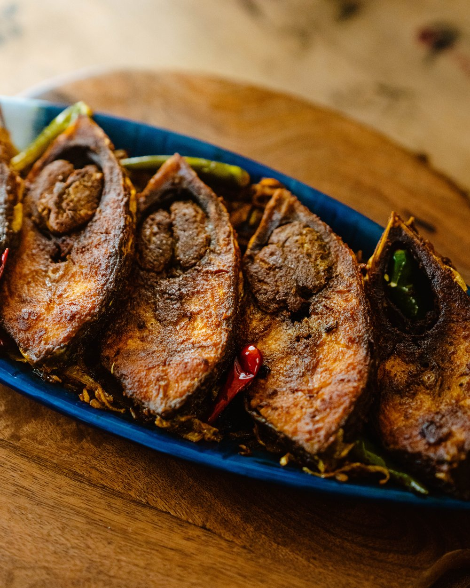

Illish(Helsa) Bhaja

Ilish Bhaja is a beloved Bengali dish made with illish fish (Hilsa),
known for its delicate,flavorful, and slightly oily texture. The fish is typically marinated with turmeric and
salt, then shallow fried to perfection, creating a crispy, golden crust while preserving
the juicy tenderness inside. The simplicity of the preparation allows the natural flavor
of the illish to shine, making it a classic and indulgent dish in Bengali cuisine.
Imagine biting into a illish fish fillet, the crispy, golden exterior crackling beneath your teeth,
while the soft, tender flesh melts in your mouth. The subtle aroma of turmeric and mustard oil fills the air,
transporting you to the heart of Bengal. The delicate, rich flavor of the illish is perfectly enhanced by
the crispy fried crust, creating a perfect balance of texture and taste. With every bite, you taste the
sea in its purest form—fresh, bold, and slightly sweet, paired with the gentle heat of mustard oil. Served
with steamed rice, it's a meal that’s simple, but utterly satisfying—one that you savor slowly, because
every piece of illish Bhaja is pure joy.
Ingredients:
- 2-4 pieces of Hilsa fish (Ilish) fillets (preferably with bones)
- 1 teaspoon turmeric powder
- 1 teaspoon red chili powder (optional, for mild heat)
- Salt to taste
- 2-3 tablespoons mustard oil (for frying)
- 1 tablespoon rice flour or corn flour (optional, for extra crispiness)
- 1 tablespoon lemon juice (optional, for added flavor)
- 1-2 green chilies (sliced, optional, for garnish)
This is a very simple recipe, but it highlights the Hilsa in all its glory,
using minimal ingredients to let the fish shine. You can add a bit of garam
masala or coriander powder if you like, but traditionally, Hilsa Bhaja is
made with just turmeric, salt, and mustard oil.
Steps to Cook Illis Bhaja:
- Marinate the Fish:
- Rinse the illishfish pieces under cold water and pat them dry with a paper towel.
- In a bowl, rub the fish pieces with turmeric powder and salt. If you like a little heat, add red chili powder as well. Optionally, squeeze lemon juice over the fish for a fresh tangy touch.
- Let the fish marinate for about 15-20 minutes to absorb the flavors.
- Prepare for Frying:
- If you prefer extra crispiness, dust the fish pieces with rice flour or corn flour on both sides. This will help create a golden, crunchy crust.
- Heat the Oil:
- In a heavy-bottomed frying pan or skillet, heat mustard oil over medium-high heat. Mustard oil adds a distinct flavor that pairs beautifully with Hilsa.
- Once the oil is hot (you can test it by dropping a small piece of fish to see if it sizzles), reduce the heat slightly to medium.
- Fry the Fish:
- Gently place the marinated fish pieces in the hot oil. Be careful, as the oil may splatter.
- Fry the fish for about 4-5 minutes on each side, or until they are golden brown and crispy. Don't overcrowd the pan; fry the pieces in batches if needed.
- Do not move the fish around too much while frying, as it can break the delicate pieces. Let it crisp up on each side before flipping.
- Serve:
- Once the fish is crispy and cooked through, remove it from the pan and drain any excess oil on paper towels.
- ◦ Optionally, garnish with sliced green chilies for an added kick.
- Serving:
- Serve the illishBhaja hot with a side of steamed rice and dal (lentils). The fried fish is often paired with a tangy mustard sauce or chutney.
Enjoy the delicious illishBhaja, a perfect balance of crispy and tender, with the natural flavors of the fish enhanced by the mustard oil!
Odin Recipies